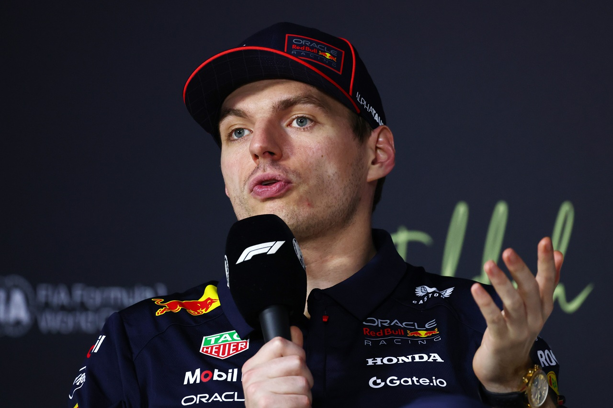

Автоспорт
Ферстаппен переходить до Aston Martin?
Партнерство Макса Ферстаппена та Red Bull стало гарячою темою в паддоку Гран Прі Саудівській...
Автоспорт
Гран Прі Саудівської Аравії: результати кваліфікації
Детальний огляд та результати найцікавіших моментів у кваліфікації. Нові рекорди та інтерв’ю з учасниками.

Автоспорт
Крістіан Хорнер планував оскаржити штраф Ферстаппена
Макс Ферстаппен стартував з поулу в Джидді, але фінішував другим, отримавши штраф за..
Автоспорт
Гнучні крила McLaren знову привернули увагу
В соціальних мережах з’явились нові кадри, як заднє крило McLaren згинається під час Гра Прі...
Автоспорт
Ферстаппен пропустить практику Гран-Прі Бахрейну
Чотириразовий чемпіон Ф1 Макс Ферстаппен збирається пропустити частину вікенду Гран Прі...
Автоспорт
Цунода замінить Лоусона в Red Bull на Гран-Прі Японії
Команда Red Bull оголосила, що Юкі Цунода замінить Ліама Лоусона у старшій команді Red Bull Racing,...